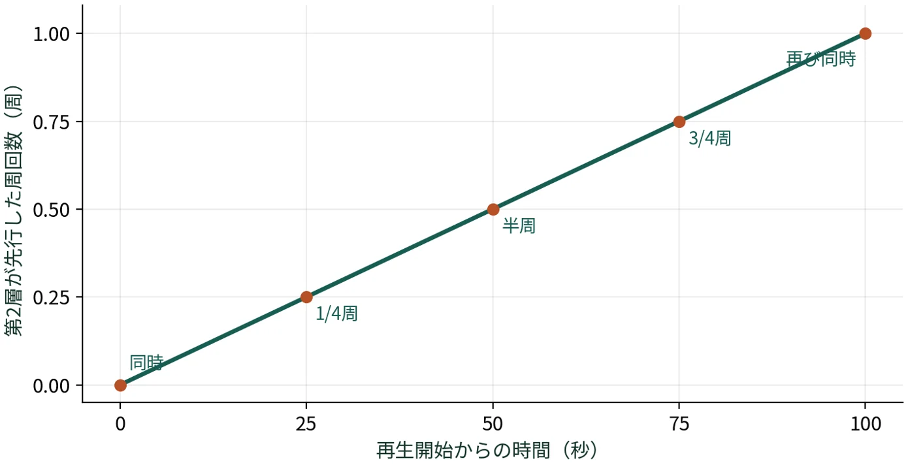

第56章 テープの長さで時間を書く
テープの速度と切り貼りを一次関数で表し、ライヒの位相ずれを計算する。
この章で学ぶこと
- テープの再生を「読み取り位置の一次関数」として表す
- 速度の違う二つのループのずれが一周するまでの時間を計算する
- 《It's Gonna Rain》で位相のずれを聴く
録音された時間に、ものさしを当てる
手拍子を録音し、その直後に机をたたく。二音の間には、録音前には測れなかった長さが生まれる。テープの走行速度が一定なら、何秒隔たっているかを、二つの磁化パターンの距離として読めるからである。英国のサイエンス・ミュージアムが所蔵するBBCレディオフォニック・ワークショップの接合テープは、この簡単な対応が実際の工房の技術であったことを物語る。楽譜に八分休符を書く行為が、何センチメートルを残してテープを切るかという工作になる。
録音の走行速度を 、テープ上の位置を 、録音前の波形を とする。理想化して磁化の値を と置く。再生開始位置 と走行速度 を決めれば、再生波形 は
この式から、周波数 の正弦波には が、元録音上の時間差 には が対応する。 なら出来事の順序が反転する。毎秒19.05 cmで録音した440 Hzは、テープ上に約0.433 mmの周期を刻む。再生速度を毎秒38.10 cmにすると同じ模様を一秒間に倍の回数通過して880 Hzになる。録音で0.50秒離れた二音の間隔は0.25秒に縮む。これは走行のモデルであり、ヘッドの周波数応答や磁気飽和まで表す式ではない。
一つの傾きが二つの音楽的効果を持つ
二度の編集を順にかける。最初の変換を 、次を とすると、出力は 。展開した読み取り位置は である。傾きの積に加え、最初の速度が次の開始位置にも作用する。逆再生や切り貼りを直感で重ねて素材の場所を見失ったときは、どの時刻が録音のどこを読むかを二点だけ書けば傾きと切片を復元できる。接合点で新しい切片と傾きを選べば、一本の直線は折れ線になる。現代のサンプラーの読み取り位置にも同じ幾何がある。
反例
反例。 スネアの録音に高域通過フィルタをかけると音は明るくなるが、打点の間隔は変わらない。理想的な倍速再生なら、ある部分音だけが高くなるのではなくすべての周波数と出来事の間隔が連動する。高域が強く聞こえたという一つの印象から編集法は同定できない。音高をほぼ保ちながら長さを変えるタイムストレッチは別の操作で、録音全体を一つの直線の読み取り位置で表すという仮定を外す。
位相がほどけ、もう一度閉じるまで
長さ 秒の同じフレーズを二本の輪にし、一方を元の速度、他方を 倍で回す。両方を同じ位置から発進させると、時間 のあいだに二つの輪が読み進んだ周回数の差は である。円周上の位相差はその小数部分。 のとき、相対的な読み取り位置が一周ぶんずれるまでの時間は になる。ここで一致するのは二層の相対位置であり、どちらも曲頭にいるとは限らない。たとえば 秒、速度比1.01なら25秒で四分の一周、50秒で半周、100秒で一周の差になる。速い方の声の音高差は約17.2セントである。

これを確かめる短い小品を作れる。一秒の輪に0秒、0.17秒、0.61秒の三つの短い打音を置く。音色を木片、金属、指鳴らしのように変えれば、どの打点が先行するかを追いやすい。同じ素材を二つ並べ、最初の再生位置をそろえ、片方の再生レートだけを1.01とする。テンポに合わせた自動伸縮を切り、100秒を一続きに書き出す。25秒のところで第2層の木片は第1層の木片から輪の四分の一だけ進んでいる。そこだけを繰り返して聞けば固定した組合せ、前後も通して聞けば組合せが生まれていく過程になる。
二つの声に割れる言葉
スティーヴ・ライヒ《It’s Gonna Rain》（1965）第I部で繰り返される声は、サンフランシスコで説教していたブラザー・ウォルターのもの。まず言葉のどこに強勢が置かれるかをまねる。再び聴き、二つの同じ発声の子音が離れて、声の間を縫う別のリズムが浮かぶ箇所を記す。二台のテープ機のずれが技法の契機になった、と作曲者自身が語る。本章の一定速・無編集の計算は、制作手順の全体や作品の正確な速度を逆算したものではない。語の意味、発話者の身振りを伝える抑揚、二層の時間差の三つを同時に追えば、式の一点の位相に、聴く立場によって異なる出来事が立ち上がる。
やってみよう
確認課題と解答。 0.8秒の輪で、二層の相対位置を40秒で一周させたい。必要な相対速度差は 。片方を1.02倍としたとき、輪が50回回った40秒後には速い方が51回で、両方が頭に戻る。次に音高差も消すにはどうするか。打音を一つずつ切り出し、同じ速さで一回ごとに再生しつつ、開始時刻の間隔だけを1.02で割ればよい。各音の持続は元の長さを保つので、音が重なる境界、語尾、残響はテープの速度変更とは別の聞こえ方になる。この違いを二種類の出力を盲検で聞き分ける手掛かりにできる。
ここだけ押さえる
- 速度を r 倍にすると、周波数は r 倍、時間は 1/r 倍。
- 速度差 ε の二つのループは、T/|ε| 秒で一周ずれる。
- タイムストレッチは、単純な速度変更とは別の操作。
この章の資料
- 接合テープという遺物から、切断・接合・速度変更の作業を読む。Science Museum Group, BBC Radiophonic Workshop items
- ブラザー・ウォルターの声と二台の機械を作曲者自身が回想する。Nonesuch / Boosey & Hawkes, Steve Reich on Composing It’s Gonna Rain
- 第I部と第II部を区別して聴ける録音案内。Steve Reich, Early Works
- 同じ過程を言葉から四音の鍵盤ハーモニカへ移した作品。作曲者の素材の選択を比較する。Steve Reich, Melodica